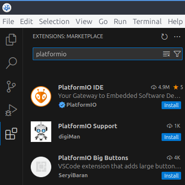
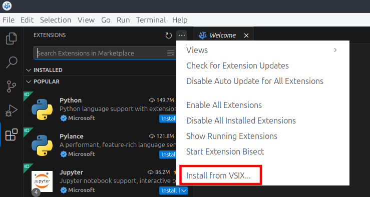

28/12/2024
Lubuntu: 24.04.1 LTS
VSCodium 1.96.2 release 24355
Intro
Objetivo: Utilizar la fuente de las extensiones de VS Code (Visual Studio Code) en VSCodium (Codium) para poder acceder a todas las extensiones.
Suelo hacer pequeños programitas para microcontroladores (placas arduino y ESP principalmente), y el arduino IDE no es mi editor favorito…
Por suerte, existe una extensión para VS Code llamada Platformio, para hacer de VS Code una buena plataforma para programar software para sistemas empotrados (o como los llaman en inglés embebidos, “embedded”).
Hace tiempo hice el cambio de VS Code a Codium. Básicamente es VS Code, ya que utiliza el código fuente de VS Code, pero eliminando la telemetría y el tracking de Microsoft.
Por ahora todo bien. Si Codium es como VSCode, entonces podré instalar Platformio. Aquí es donde entran algunas restricciones, que hacen que esto no sea así directamente.
Vamos a ver cómo podemos descargar cualquier extensión que haya disponible en VSCode, pero en Codium.
1. Diferencia entre extensiones
¿Por qué VSCode y Codium no tienen las mismas extensiones?
La realidad es que Codium es un software FLOSS (Free Open Source Software), y también deben serlo sus extensiones; por lo que extensiones que no sean libres, puede que estén restringidas únicamente a VSCode.
En el caso de Platformio, este depende de una extensión de C/C++ de Microsoft, y Microsoft no permite que se haga uso de esta extensión de C/C++ en otros editores.
Digamos entonces, que las extensiones de VSCode y Codium pueden variar en general por dos motivos. Uno de ellos las filosofía FLOSS de Codium, y otro, que oficialmente Codium no puede distribuir ciertas extensiones de manera global por restricciones.
En la siguiente imagen se muestra, cómo no es posible encontrar Platformio en Codium, utilizando su centro de software de extensiones.
2. Extensiones VSCode en Codium
¿Cómo podemos hacer para tener las extensiones de VSCode en Codium?
Pues conseguir esto es bastante fácil.
Las extensiones que podemos descargar tanto en VScode, como en Codium, deben de estar almacenadas en alguna base de datos, estilo una tienda, o un centro de software, o un marketplace, y las apps de VSCode y Codium deben estar apuntando a esos marketplace para cargar el listado de extensiones y poder descargarlas e instalarlas.
Si las extensiones que nos muestran VSCode y Codium son distintas, quiere decir que los marketplace a los que apuntan, también son distintos.
Pero si VScode y Codium son literalmente iguales (mismo código fuente), las extensiones de uno deben de poder utilizarse en el otro.
Simplemente bastará con cambiar el marketplace de las extensiones de Codium y sustituirlo por el que utiliza VSCode.
Buscando en la documentación de VSCodium encontramos que el marketplace que utiliza es Open VSX Registry, y VSCode utiliza su Visual Studio marketplace.
2.1 Sustituir marketplace de Codium
Entre los archivos de configuración de Codium, podemos encontrar el siguiente product.json
Dependiendo de cómo hayamos descargado Codium puede estar en distintas rutas. En mi caso en /usr/share/codium/resources/app/product.json.
En este archivo es donde se encuentra la URL del marketplace que utiliza Codium, por lo que bastará por sustituirlo por el de VSCode.
En el archivo product.json, vamos a buscar
"extensionsGallery": {
"serviceUrl": "https://open-vsx.org/vscode/gallery",
"itemUrl": "https://open-vsx.org/vscode/item"
},
Y lo sustituimos por
"extensionsGallery": {
"serviceUrl": "https://marketplace.visualstudio.com/_apis/public/gallery",
"cacheUrl": "https://vscode.blob.core.windows.net/gallery/index",
"itemUrl": "https://marketplace.visualstudio.com/items"
},
En la siguiente imagen ya podemos ver cómo ahora sí aparece la extensión Platformio en el marketplace de extensiones que hay integrado en Codium, que ahora es el marketplace de VSCode.
3. ¿Otra alternativa? Archivos .vsix
Hay otra opción para instalar extensiones que no están en el marketplace de Codium en Codium sin cambiar el marketplace.
Desde el propio marketplace de extensiones de VScode, podemos descargarla.
Esto nos descargará un archivo con extensión .vsix. Una vez descargado, abrimos Codium, navegamos hasta el menú de extensiones, y presionamos los 3 puntos del panel de extensiones en la esquina superior derecha.
Pulsamos en “install from VSIX” y buscamos el archivo que acabamos de descargar.
La extensión deberá instalarse si no hay ningún fallo. Reinicia Codium y ya debería estar lista.
Hay que recordar, que si la extensión que intentas instalar depende de otras que tampoco están en el marketplace de Codium, también deberás descargar su correspondiente archivo .vsix e instalarlo en Codium, para evitar fallos.
También cabe destacar que con este método, no podremos actualizar la extensión directamente desde Codium, sino que deberíamos de repetir de nuevo todo el proceso de búsqueda, descarga e instalación manual del archivo .vsix cuando la quisiéramos actualizar.